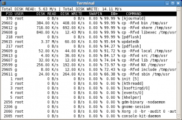
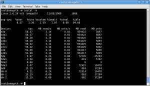

Posted February 18, 2009 by morten
Several times I’ve wanted to monitor if login actually works on webapplications that uses html forms for user validation. Today I made a simple bash nagios plugin to do that. It uses curl and checks it’s output. Curl supports POST variables.
The plugin also checks the unixtime before and after the curl command is being run, then does and expr to find the diff and makes nagios performance data of it.
Feel free to copy paste the code and use it for your own purpose.
#!/bin/sh
#my %ERRORS=('OK'=>0,'WARNING'=>1,'CRITICAL'=>2,'UNKNOWN'=>3,'DEPENDENT'=>4);
#This is what we get after a successful login
MATCH="bladiblah successful login bladiblah"
#delete the tmp file before writing a new one
rm /tmp/login_check
#Grab the unixtime before the command runs
BEFORE=`date +%s`
#Login to the app
/usr/bin/curl -H "host: example.com" -F mail="mail@example.com" -F userPassword="fail" http://111.111.111.111 -o /tmp/login_check > /dev/null 2>&1
#Grab the unixtime after the command have been run
AFTER=`date +%s`
DIFF=`/usr/bin/expr $AFTER - $BEFORE`
#Check tmp file if it matches our successful login
CHECK=`grep "$MATCH" /tmp/login_check`
if [ "$CHECK" = "$MATCH" ]; then
#WIN!!
echo "OK. Login successful. | response=$DIFF"
exit 0
else
#FAIL!!
echo "CRITICAL. Login failed."
exit 2
And as always, sorry about the wordpress formating of the code.
Tags: authentication, forms, html, login, monitoring, nagios, post, variables
Posted January 29, 2009 by morten
Getting Dell’s linux-software to work on other platforms than Redhat can be a bitch, but I was lucky to come across this article. Following those steps I had dellomsa up and running a couple of minutes later.
Then I went to nagiosexchange and downloaded the perl script check_dell_sensors.pl.
In this case I use check_by_ssh to run the check on each host, so here’s the command.cfg setup
define command{
command_name check_dell_sensors
command_line $USER1$/check_by_ssh -l someuser -t 30 -H $HOSTADDRESS$ -C "/usr/lib/nagios/plugins/check_dell_sensors.pl"
}
and finally the services.cfg
define service{
use generic-service
hostgroup_name cfg_CHECK_DELL_SENSORS
service_description CHECK_DELL_SENSORS
is_volatile 0
max_check_attempts 3
normal_check_interval 5
retry_check_interval 1
contact_groups linux-admins
notification_period 24x7
notification_options c,w,r
check_command check_dell_sensors
}
This will monitor your dell hardware on all hosts in your cfg_CHECK_DELL_SENSORS hostgroup, giving you an output like :
/usr/lib/nagios/plugins/check_dell_sensors.pl
OK -- Hardware Log=Ok; Memory=Ok; Power Supplies=Ok; Processors=Ok; Temperatures=Ok; Voltages=Ok;
Tags: dell, hardware, monitoring, nagios
Posted January 27, 2009 by MrDingle
After massive googling and no results i finally called the local “we’ll fix your whirpool stuff” shop. The kind lady on the phone told me that if the led on the front of the machine starts to flash 6 times, then a break, six times again etc etc; It means that it does not have a water supply. She then asked me if we’d been messing with the water lock under the sink or something like that. Well, we kinda had since our washingmachine just broke like a few days before, but nothing that would block the dishwashers watersupply. In the end it turns out that the faucet on the kitchen sink has this little “handle” on it right at the bottom that controls the watersupply to the dishwasher. I turned it 45 degress – and voila! It works again…
DOH!!
Tags: dishwasher, fix, whirlpool
Posted January 22, 2009 by morten
This is something we started doing some time during the end of last year. We wanted to have nagios and cfengine to cooperate. We didn’t want cfengine to monitor if processes were running, cause thats nagios’ job and we didnt want nagios to fix problems occuring, cause that’s cfengine’s job ….SO ..we found out that cfrun could help us out with this problem and make a simple integration. Here’s how we did it.
In this particular scenario, we had some segfaults in our apache logs caused by some PHP errors we couldnt fix, which ended up in apache spawning a lot of child processes and giving us lots of defuncts and we had to restart apache every now and then.
So first we configured a check in our services config file in nagios. Something like this :
services.cfg
define service{
use generic-service
host_name webserver.somedomain.com
service_description CHECK_LOG_SEGFAULT
is_volatile 0
max_check_attempts 1
normal_check_interval 5
retry_check_interval 1
contact_groups admins
notification_period 24x7
notification_options c,w,r
process_perf_data 1
check_command check_log_segfault
event_handler restart-apache
}
Now configure the commands. One command for the event-handler,n ame it “restart-apache” which is what the “event_handler” option in the example above says. One command for the logcheck, “check_command check_log_segfault”
commands.cfg :
define command{
command_name restart-apache
command_line /usr/bin/sudo /usr/sbin/cfrun $HOSTNAME$ -T -- -q -D restart_apache2_now
}
define command{
command_name check_log_segfault
command_line $USER1$/check_by_ssh -l root -t 30 -H $HOSTADDRESS$ -C "/usr/lib/nagios/plugins/check_log -F /var/log/apache2/error.log -O /var/log/apache2/check_log_oldlog -q Segmentation"
}
(The check_log command is being run on every host that needs it, but you could for instance call it via net-snmp’s EXEC function if you dont want to use ssh. NRPE is prolly also an alternative).
Be sure to enable eventhandlers in nagios.cfg for this to work.
nagios.cfg :
enable_event_handlers=1
Thats what’s needed for nagios. Let’s conf some cfengine.
In the nagios config you can see we’re running the cfengine class “restart_apache2_now”, so lets create a cfengine class with the same name.
cf.apache2 :
###############################################################
control:
actionsequence = ( packages shellcommands )
AddInstallable = ( has_apache2 )
IfElapsed = ( 0 )
###############################################################
classes:
###############################################################
packages:
debian::
apache2
pkgmgr=dpkg
define=has_apache2
################################################################
shellcommands:
# apache2 initscript
# Usage: /etc/init.d/apache2 {start|stop|restart|reload|force-reload}
debian.has_apache2.restart_apache2_now::
"/etc/init.d/apache2 restart"
Be sure to include this class in your cfengine config so that cfengine knows about it.
So now nagios monitors the logfile, checks for segfault messages and tells cfengine to restart apache if a segfault is found. (The nagios plugin check_log takes care of comparing new and old segfault messages, so that’s nothing to worry about). Everyone is happy and we (the sysadmins) dont have to do shit. Just the way we want it.
Tags: apache, cfengine, cfrun, nagios
Posted January 22, 2009 by MrBerry
Wondering how big your database is, and whats taking up the space?
Im running a Bacula server for backing up about 50 servers, and the MySQL dump of the db is 10gb.
Im wondering, what the hell is all this shit, which table is the large one etc.
mysql> SELECT
concat(table_schema,'.',table_name),concat(round(table_rows/1000000,2),'M')
rows,concat(round(data_length/(1024*1024*1024),2),'G')
DATA,concat(round(index_length/(1024*1024*1024),2),'G')
idx,concat(round((data_length+index_length)/(1024*1024*1024),2),'G')
total_size,round(index_length/data_length,2)
idxfrac FROM information_schema.TABLES ORDER BY data_length+index_length DESC LIMIT 10;
This will save your life, then run:
mysql> OPTIMIZE TABLE bacula.File;
And let the cleanup begin 
Tags: database, mysql, optimize, size, table
Posted January 19, 2009 by MrBerry
I read as of today a post about some new 1tb 7200.11 disks having problems with corrupted data.
Links:
http://www.theregister.co.uk/2009/01/16/barracuda_failure_plague/
http://seagate.custkb.com/seagate/crm/selfservice/search.jsp?DocId=207931
And of course, after checking my disks with hdparm i found out that my disk is possible faulty %#”&&#”
root@smagoth:~# hdparm -I /dev/sdb
/dev/sdb:ATA device, with non-removable media
Model Number: ST31000340AS
Serial Number: 3QJ08QG3
Firmware Revision: SD15
Transport: Serial
Guess i will have to upgrade the firmware with their fancy boot ISO :s
Tags: barracuda, drives, faulty, hdparm, seagate
Posted January 8, 2009 by MrDingle
The other day i was trying to graph some of my xen virtualization servers with munin. Munin gives you a default set of plugins which will install and configure themselves upon installation of the munin package.
So what happens when you want to add additional plugins? Well you can either stick the plugins directly in the /etc/munin/plugins directory directly or place them in /usr/share/munin/plugins and make a symlink to them from the /etc/munin/plugins dir (like at least debian does by default).
If you place them directly in the /etc/munin/plugins dir all you need to do is restart the munin-node. If you place them under /usr/……. and symlink them yourself its the same. Lets say you just copy the plugin to the /usr/…… dir and want to make munin automagically install it if it fits your system. Then you can issue the command
/usr/sbin/munin-node-configure --shell | sh
However in order to do so the plugin has to have the “autoconf” ability. To check if the plugin you want to install has this, just issue the following command
munin-run --servicedir /path/to/where/you/placed/your/plugin name_of_your_plugin autoconf
It should say just “Yes” if it has. So what if the if command above returns YES but still nothing happens? I had this problem the other day and i had to visit the #munin channel on irc.linpro.no to get answers from the dudes that knows this shit the best. It dialogue went like this:
18:39 < Kristian> does the plugin have the manual magic marker?
18:39 < me> :)
18:39 < me> which is ?
18:39 < me> hehe
18:40 < Kristian> a line in the script that reads something like: #%# family=manual
18:40 < me> ah
18:40 < me> h
18:40 < me> m
18:41 < me> it might not
18:41 < me> is that all it takes to make it do what i want?
18:41 < me> http://muninexchange.projects.linpro.no/?view&phid=185
18:41 < me> thats the code
18:41 < me> so nope it doesnt
18:43 < Kristian> ah, no family at all. One second :) (I'm really no expert here, I'm just equally curious)
18:43 < me> 14 #%# family=auto
18:43 < me> 15 #%# capabilities=autoconf
18:43 < me> i added those two
18:47 < me> works now :)
18:47 < me> thanks :)
18:47 < Kristian> well, munin-node-configure tries the family=auto by default, if the plugin doesn't have a family set, it's assumed to be contrib
18:47 < Kristian> so adding --families contrib,auto will do roughly what you want
18:47 < Kristian> but they still need the capabilities=autoconf marker
18:49 < me> right
18:49 < me> then that plugin i linked to should be updated
18:49 < Kristian> yeah
18:49 < me> since it has autoconf capabilities
So even tho the plugin presumably has autoconf ability, check if it also specifies it by including something like:
#%# family=auto
#%# capabilities=autoconf
Tags: autoconf, graph, munin, stats, xen
Posted January 4, 2009 by MrBerry
Yes so the sarge repos is gone from all official debian mirrors.
Still got an old sarge box and want to install some packages?
Add this line to your /etc/apt/sources.list:
deb http://archive.debian.org/debian/ sarge main
And remove all the others.
Now do:
apt-get update
Now you should be able to install packages for your sarge. (But you really should upgrade due to big security risks!)
Tags: apt, debian, repo, sarge
Posted November 10, 2008 by MrBerry
You are on your job workstation, and you are SICK and TIRED of typing your password everytime you ssh to one of your corporate l33t h4xx0r boxes. Lets see how we easy as hell can use ssh keys to authenticate:
As your normal user on your workstation:
ssh-keygen -t rsa
This command makes your unique id for other servers to recognize when you ssh to them.
If you want passphrase you make one, everything else goes by default.
Lets make your servers recognize you and your key:
ssh-copy-id -i ~/.ssh/id_rsa.pub user@superhaxxorserver.com
Now you can do this without having to type a password:
dingle@berry-desktop:~$ ssh horsepr0n.mine.nu apt-get moo
(__)
(oo)
/------\/
/ | ||
* /\---/\
~~ ~~
...."Have you mooed today?"...
Tags: authentication, keygen, keys, ssh
Posted November 5, 2008 by MrBerry
Allright so you wanna check I/O on your machine, where it all goes and all that kinda shit.
apt-get install iotop sysstat
Then you have two tools for checking your I/O problems:
First one: iotop

This one shows which processes read and write, how much they r/w.
This one is really good if you wonder which procs are making your machine stall.
Second one: iostat -m 1

This one shows you the I/O for devices and partitions. Very nice if you wanna check which disks are written/read to in a sw-raid or lvm array
Please comment on other useful tools that should be mentionable
Tags: io, monitoring, tools


{kind=link}
{kind=link}